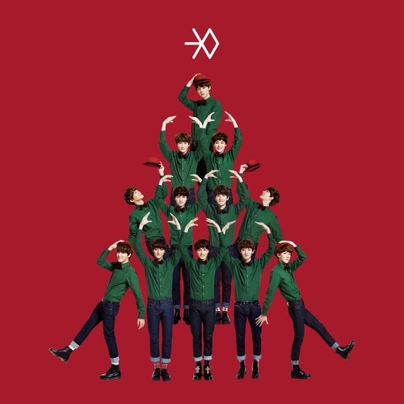

Season Song
Tab Menu
버스커 버스커 (Busker Busker) - 벚꽃 엔딩
- 아티스트: 버스커 버스커
- 첫번째 앨범: 버스커 버스커 1집
- 발매일: 2012년
- 장르: POP
- 봄바람 휘날리며 흩날리는 벚꽃 잎이
- 울려 퍼질 이 거리를 우우 둘이 걸어요
- 봄바람 휘날리며 흩날리는 벚꽃 잎이
- 울려 퍼질 이 거리를 우우 둘이 걸어요
f(x) 에프엑스 'Hot Summer'
- 아티스트: f(x)
- 첫번째 앨범: Hot Summer
- 발매일: 2011년
- 장르: POP
- Hot Summer Ah Hot Hot Summer
- Hot Summer Ah Hot Hot 너무 더워
- Hot Summer Ah Hot Hot Summer
- Hot Summer Ah Hot Hot 이게 제 맛
AKMU (Akdong Musician) 악동뮤지션 시간과 낙엽
- 아티스트: AKMU
- 첫번째 앨범: 시간과 낙엽
- 발매일: 2014년
- 장르: POP
- 맨발로 기억을 거닐다
- 노란 은행나무에
- 숨은 나의 옛날 추억을 불러본다
- 맨발로 기억을 거닐다
- 불어오는 바람에
- 가슴으로 감은 눈을 꼭 안아본다
EXO 엑소 '12월의 기적 (Miracles in December)'

- 아티스트: EXO
- 첫번째 앨범: 12월의 기적
- 발매일: 2013년
- 장르: POP
- 늘 나밖에 몰랐었던 이기적인 내가
- 네 맘도 몰라줬던 무심한 내가
- 이렇게도 달라졌다는 게 나조차 믿기지 않아
- 네 사랑은 이렇게 계속 날 움직여